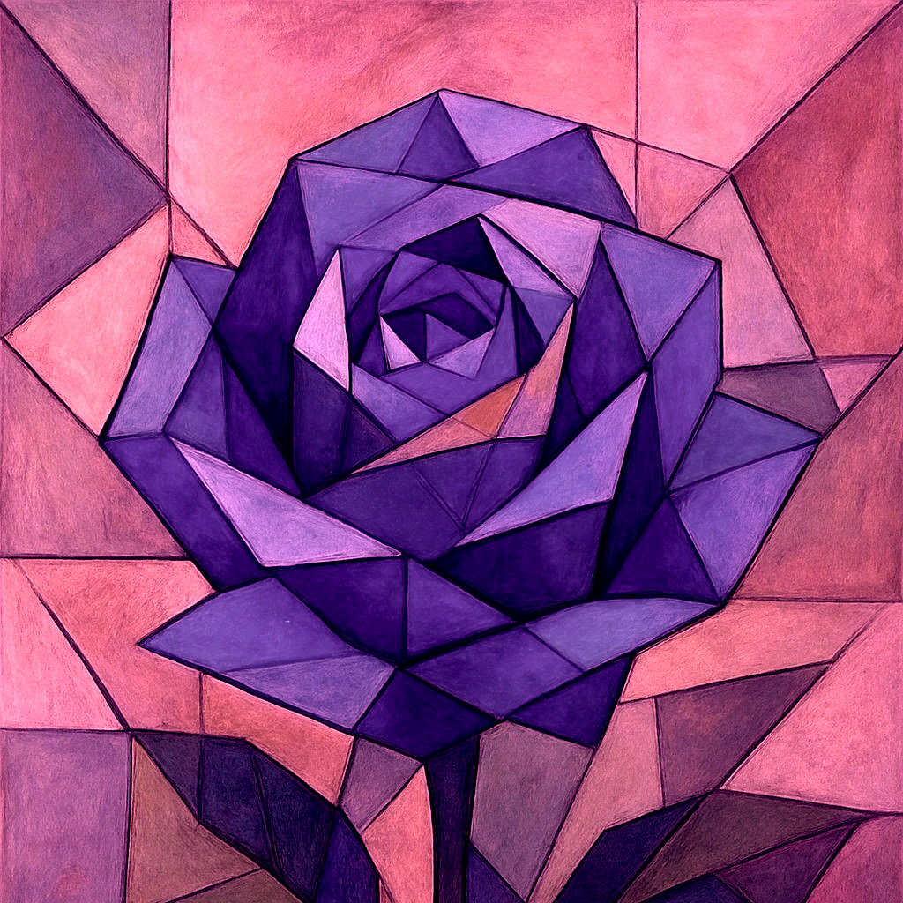
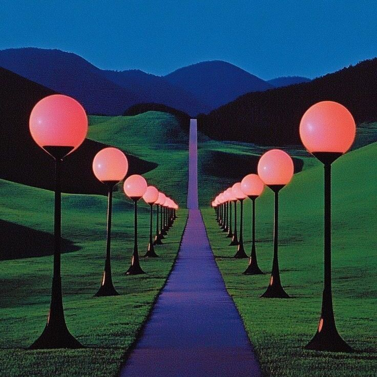
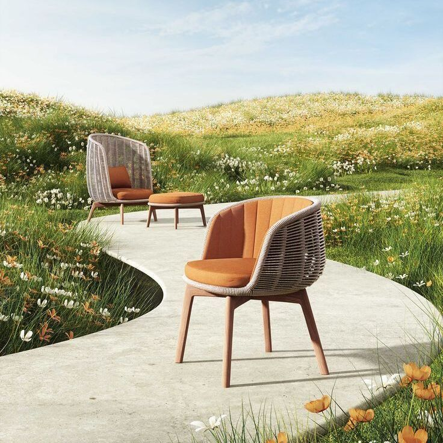
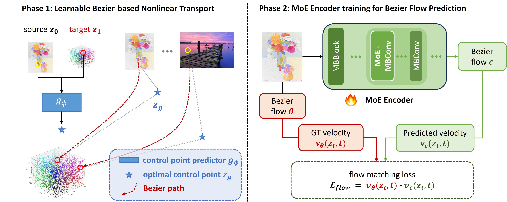
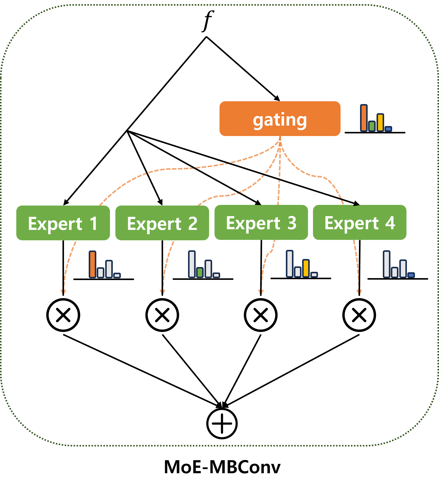
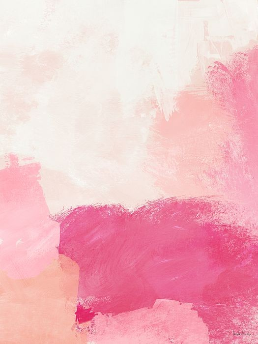

Qualitative Results
Image Gallery
Diverse creative color transfer scenarios across various material types and aspect ratios.




Nonlinear Color Transfer via Learnable Bezier Flows
We map images with complex color distributions to a uniform latent space using Bezier parameterized flows; learned control points choose color aware paths that preserve chromatic detail better than linear (rectified) flows. To predict these richer Bezier flows, we equip the encoder with a Mixture of Experts, enabling stable learning over heterogeneous color regimes.


Diverse creative color transfer scenarios across various material types and aspect ratios.



Temporally consistent color transfer across diverse scenes with complex motion and
illumination changes.
We compare our Bezier-based formulation with existing color transfer methods, including Neural Preset and Modulated Flows. We also evaluate ours (Bezier Flow + MoE encoder) against a variant without MoE to assess the contribution of each component.




Comparison of color transfer quality across aggregated scores, content fidelity (LPIPS, PSNR, SSIM), Lipschitz continuity, and style scores on the ModFlows dataset. Lower ↓ is better for most metrics except PSNR and SSIM ↑.
| Methods | Aggregated scores ↓ | Content scores | Lipschitz ↓ | Style ↓ | ||||
|---|---|---|---|---|---|---|---|---|
| Gray | Depth | Edge | LPIPS ↓ | PSNR ↑ | SSIM ↑ | |||
| CT | 0.3028 | 0.3084 | 0.3067 | 0.3408 | 13.56 | 0.6001 | 33.73 | 0.2365 |
| MKL | 0.2965 | 0.3077 | 0.3062 | 0.3661 | 13.42 | 0.5897 | 43.50 | 0.2281 |
| WCT2 | 0.3109 | 0.3755 | 0.3131 | 0.4436 | 13.42 | 0.5454 | 76.18 | 0.2192 |
| PhotoNAS | 0.3470 | 0.3827 | 0.3339 | 0.4877 | 13.36 | 0.5586 | 71.29 | 0.2585 |
| DAST_d | 0.3493 | 0.4224 | 0.3311 | 0.5438 | 12.11 | 0.5222 | 102.33 | 0.2049 |
| DAST_da | 0.3516 | 0.4206 | 0.3340 | 0.5328 | 12.12 | 0.5079 | 105.63 | 0.1993 |
| PhotoWCT2 | 0.3072 | 0.3904 | 0.3150 | 0.4926 | 12.22 | 0.5568 | 111.17 | 0.1990 |
| ModFlows | 0.3069 | 0.3175 | 0.3110 | 0.3927 | 12.79 | 0.5073 | 47.84 | 0.2214 |
| NCT w/o MoE | 0.3123 | 0.3079 | 0.3047 | 0.2911 | 14.79 | 0.6229 | 34.28 | 0.2507 |
| NCT (ours) | 0.3032 | 0.3003 | 0.2954 | 0.3067 | 14.04 | 0.5718 | 36.25 | 0.2371 |
| Methods | Aggregated scores ↓ | Content scores | Lipschitz ↓ | Style ↓ | ||||
|---|---|---|---|---|---|---|---|---|
| Gray | Depth | Edge | LPIPS ↓ | PSNR ↑ | SSIM ↑ | |||
| CT | 0.3121 | 0.3603 | 0.3180 | 0.3575 | 12.42 | 0.6477 | 43.34 | 0.2560 |
| MKL | 0.3104 | 0.3689 | 0.3215 | 0.3943 | 12.29 | 0.6430 | 59.17 | 0.2531 |
| WCT2 | 0.3310 | 0.4061 | 0.3334 | 0.4493 | 12.30 | 0.6056 | 67.12 | 0.2452 |
| PhotoNAS | 0.3437 | 0.3979 | 0.3364 | 0.4467 | 12.10 | 0.6008 | 83.88 | 0.2649 |
| DAST_d | 0.3597 | 0.4137 | 0.3385 | 0.4996 | 11.14 | 0.5618 | 105.66 | 0.2321 |
| DAST_da | 0.3617 | 0.4118 | 0.3412 | 0.5049 | 11.15 | 0.5549 | 107.38 | 0.2302 |
| PhotoWCT2 | 0.3156 | 0.3901 | 0.3199 | 0.4392 | 11.30 | 0.6187 | 103.58 | 0.2285 |
| ModFlows | 0.3139 | 0.3680 | 0.3244 | 0.4090 | 12.10 | 0.6024 | 51.08 | 0.2479 |
| NCT w/o MoE | 0.3301 | 0.3331 | 0.3251 | 0.3096 | 13.47 | 0.6530 | 45.48 | 0.2748 |
| NCT (ours) | 0.3133 | 0.3592 | 0.3174 | 0.3295 | 12.90 | 0.6488 | 49.30 | 0.2634 |
@inproceedings{lee2026nonlinear,
title = {Nonlinear Color Transfer via Learnable Bezier Flows},
author = {Lee, Junhyoung and Jo, Seongwoon and Park, JeongHun and Ryou, Yeonji and Yang, Jeongha and Kim, Jangho},
booktitle = {Proceedings of the IEEE/CVF Conference on Computer Vision and Pattern Recognition},
pages = {41741--41751},
year = {2026},
}